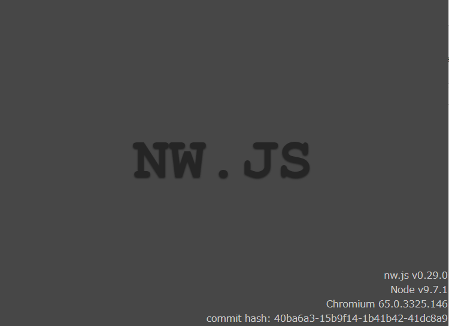

RPGツクールMV Game.exeがpackage.nwをちゃんと読んでくれなかった話
目次
RPGツクールMVのデプロイメントで出力されたファイルを、NWjs公式で紹介されている方法でパッキングできます。1
わたしも依頼した楽曲を含めて配布することになったため、そろそろこの手法をやっておこうかなと思って挑戦した2ところ、Game.exe（nw.exe）の画面がnw_blank.htmlになってしまいました。
一晩これで眠れなかったので、とりあえず納得のいく説を書いておきます。
詳細な手順と症状
- まず、RPGツクールMVのデプロイメントでプロジェクトをデプロイします。
- デプロイ先のwwwディレクトリとpackage.jsonを.zipに圧縮します。
- 圧縮した.zipファイルをpackage.nwにリネームします。
- wwwディレクトリとpackage.jsonを削除し、Game.exe（あるいは、nw.exe）を起動します。
- ご覧の有様だよ！！

本来であればゲームが起動してほしいところ、開いたウィンドウはこのメタリックな画面のまま動きません。
試行錯誤
ググる
まずは天下のグーグル先生に聞いてみましょう。 Google is your friend.
すると、全く同じ症状で苦しんでいるポストが海外のフォーラムにありました。
しかし、解決はしていないようです。
NWjs を最新版にしてみる
2020/05/01現在最新の0.45.0にして、上記手順のGame.exeや.dll周りを差し替えて試してみました。
結果は同じくメタリックさん。変わりません。
package.json だけ置いてみる
package.jsonだけ削除せずにGame.exeを起動してみました。
すると、対象が見つかりませんエラー。index.htmlが見えていない（つまり、package.nwの中身が見えていない）ということで間違いなさそうです。
package.nw ディレクトリを置いてみる
実はNWjsの公式ドキュメントにはこの方法が推奨されると書かれています。
package.nw というzipファイルではなく、ディレクトリを用意して、package.jsonとwwwディレクトリをその中に放り込んで試してみました。
無事にゲームが起動しました。
こうなると、package.nwを作る方法（すなわち、.zip圧縮の方法）が疑わしい、ということがわかります。
nw-builder を使ってみる
nw-builder は、NWjsのプロジェクトを.exeにパッキングしてくれるプログラムです。
以下のようにして簡単に使用できます。
npm install nw-builder -g |
これによって出力されたディレクトリの中身をNWjsの最新版ディレクトリに放り込んで、.exeを起動すると、無事にゲームが開始されます。
nwbuild の実行中、コンソールには Zipping （ファイル名） などと表示されていたので、内部でzip圧縮処理を行っているのでしょう。
nw-builder のソースコードを読む
つまり、 nw-builder と同じ方法でzip圧縮すれば、起動のために必要な package.nw が得られるのでは、と考えてやってみました。
generateZip.js
nw-builderのソースコードを読んで、zip圧縮している箇所だけ単体で実行できるように雑に書いたjsです。
archiver と simple-glob に依存しているので、それらをインストールしてから実行します。
npm install archiver -g |
このプログラムによって生成した package.nw を使って実行したところ、ゲームが無事に起動しました。3
つまり、zipの作り方が何かしら間違っていた可能性があります。
ZipInfoを見比べる
では、起動に成功する良いzipと、メタリックな画面のお友達な悪いzipの中身、どう違うのでしょうか。
答えはZipInfoで両者の中身を見た時になんとなく想像できました。
- permissionの表示が異なる（
-rw-rw-rw-と-rw-a--） - 作成環境が異なる（
unxとfat） - ディレクトリそのものが構成の中に記されているかどうか（悪いzipはディレクトリそのものが記されていた）
- ファイル名のマルチバイト文字が化けているかどうか（悪いzipは化けている）
この中で、最も怪しいのはマルチバイト文字です。
なぜかと言うと、海外のポストで苦しんでいた人物がブラジルの人だから。4
とは言え、ローカルでこれの検証をするだけの元気は残っていませんでした。
誰か暇な人がいれば、検証してみてください。
- セアロソンク作品サポートブログ : 【ツクールMV】ENIGMA VIRTUAL BOXを使わずにファイルを隠蔽する方法参照。
- ただし、zipを使った方法ではnwjsが一時ディレクトリに中身を全展開するのでリソースが丸見えになる。ファイル隠匿の効果がまったくない。
- しかも、nw-builderと違って必要なファイルのみ圧縮しているので、容量もそこそこ削減できた。
- ブラジルの公用語はポルトガル語。セディーユ等の特殊なマルチバイト文字が含まれる。